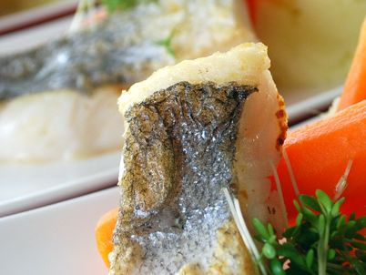
Amusediner
Acht of tien kleine, verfijnde gerechtjes. We nemen u en uw gasten mee "op reis" door Brabant.
8 of 10 gangenMeer info
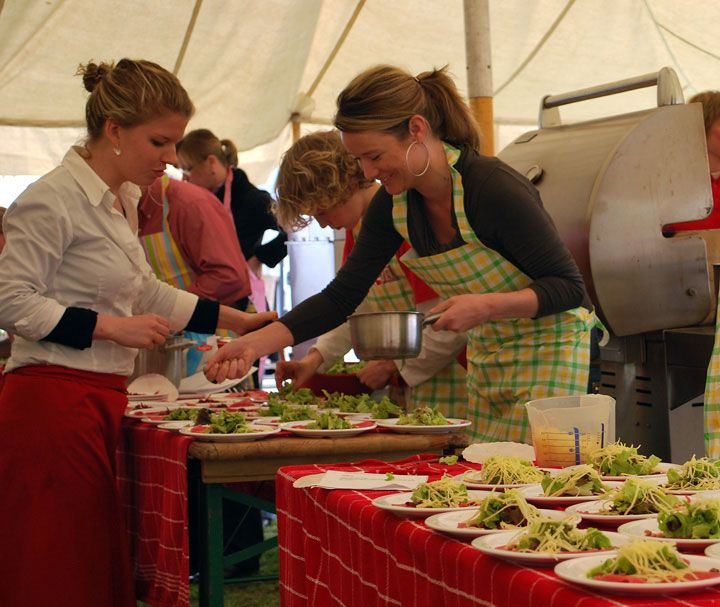
Onze kok bereidt alles ter plaatse in een mobiele keuken, met verse producten uit de omgeving van Made. Voor uw feest, bruiloft of zakelijk evenement, en de tent regelen we ook.
Zowel het eten als de bediening waren perfect, we hebben er van genoten! En we hoorden alleen maar complimenten.Natasha en Gijs van den Heuvel
Van verfijnde gerechtjes tot een varken aan het spit. De gerechten bepalen we samen met u, en we houden graag rekening met dieetwensen.

Acht of tien kleine, verfijnde gerechtjes. We nemen u en uw gasten mee "op reis" door Brabant.
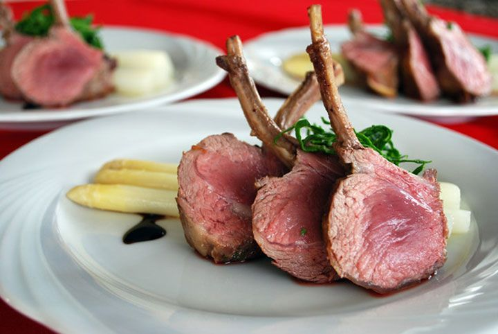
Een walking dinner: gasten lopen langs onze mobiele keuken en halen zelf een gerechtje op.
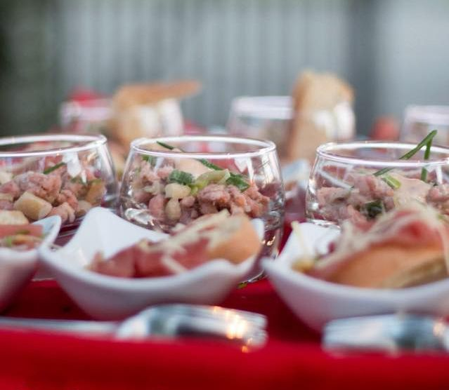
Hapjes op kleine bordjes, lepels of in glaasjes. Ideaal voor uw borrel, met een goed glas wijn.
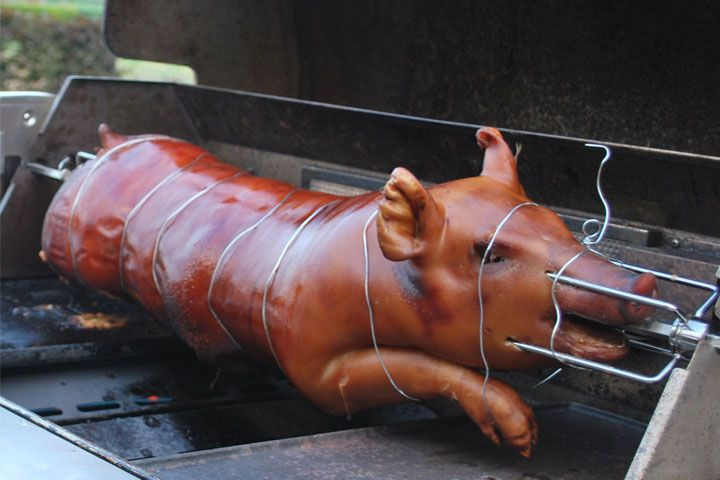
Speenvarken uit de streek, gevuld en minstens 4 uur aan het spit in onze buitenkeuken.
Het eten en de professionele organisatie er omheen waren beiden voortreffelijk. Van onze gasten niets dan complimenten gehad.Christ Aertse50e verjaardag
Mede dankzij jullie goede zorgen en uitstekend eten is ons 25-jarig huwelijksfeest een groot succes geworden.Marcel en Marjolein Lint25-jarig huwelijksfeest
…alles liep op rolletjes, heerlijk gegeten en een prachtige tent.Corne en AddyFamiliedag
Het eten, de route, zo dicht bij huis en toch helemaal er uit. De mooie zonnige avond. Het kon niet beter!Isabelle ProhnRabobank Amerstreek
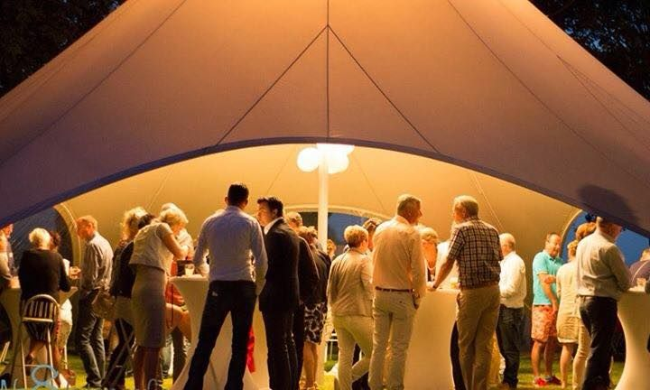
Een feest organiseren is meer dan alleen de catering. Daarom kunt u bij Streekkoken ook een feesttent huren, met de aankleding erbij. Wij plaatsen de tent op iedere gewenste locatie.
Een Starshade-tent huurt u al vanaf € 310.
Bekijk de tenten en aankledingProducten van dichtbij zijn niet alleen duurzamer, maar ook lekkerder. Daarom koken we zoveel mogelijk met dagverse producten uit eigen streek. Benieuwd naar het verhaal achter een gerecht? Vraag het gerust.
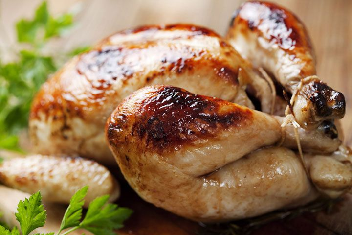
Oude streekrassen zoals de Chaamse hoen, die langzaam opgroeien.
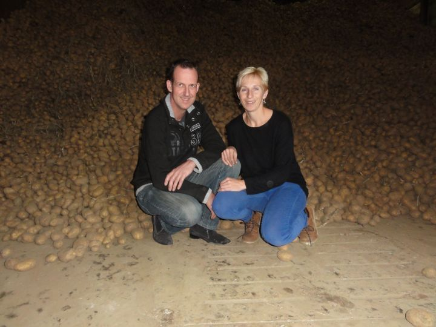
Ramos en Bildstar aardappelen, het hele jaar door uit onze streek.
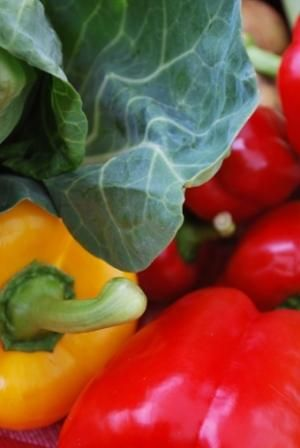
Hij levert uitsluitend van ondernemers en boeren uit Brabant.
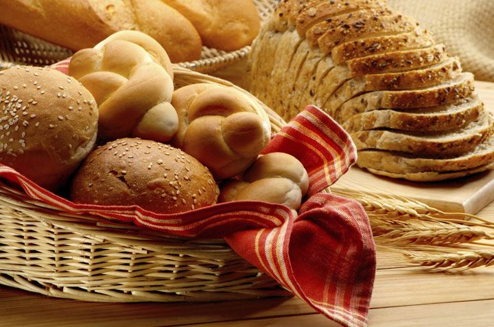
Ambachtelijk brood, en pannenkoeken van meel van een molen die al sinds 1742 maalt.
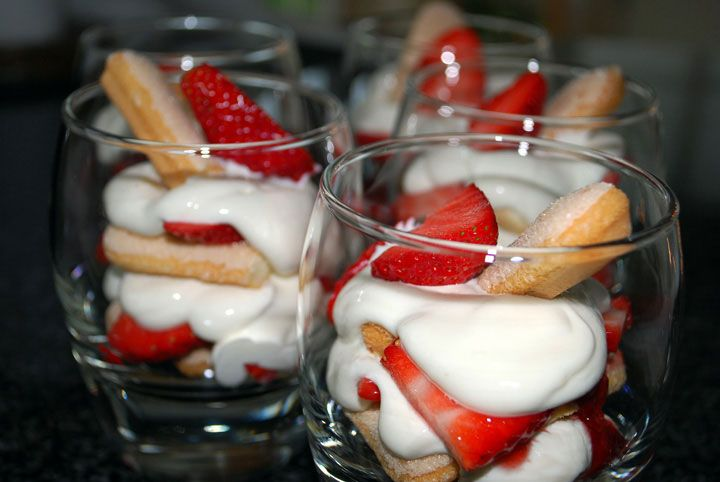
Gemaakt met melk van de eigen koe, van yoghurtijs tot basilicum roomijs.
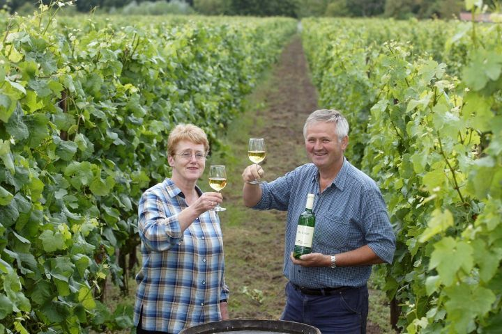
De oudste wijnboer van Nederland, met witte en rode wijn van klassieke druivenrassen.
Ons vlees komt van slagerij Havermans uit Wagenberg, de Boerenkaas van kaasboerderij 't Bosch uit Made.
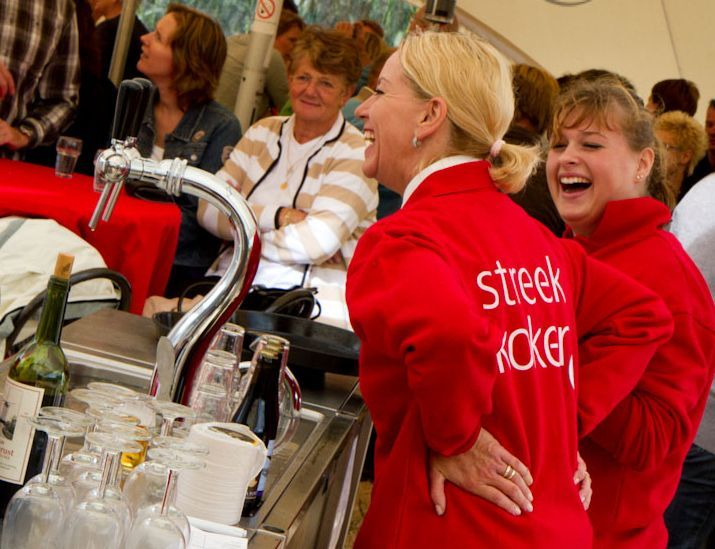
Koken is onze passie. Hoe verser het ingrediënt, hoe mooier het resultaat. En dat proef je!
De drijvende kracht achter Streekkoken is Bianca Nuijten, geboren en getogen in Made. Bianca is allround kok en geeft haar gerechten graag een frisse, eigentijdse uitstraling.
Ons enthousiaste jonge team van koks verzorgt uw evenement op een persoonlijke en flexibele manier. Met onze buitenkeukens en tenten is catering op iedere gewenste locatie mogelijk.
Vertel ons wat u van plan bent, dan maken we een offerte op maat. U krijgt binnen 24 uur een reactie.
Liever even overleggen? Bel of app Bianca, dagelijks van 08.00 tot 20.00 uur.